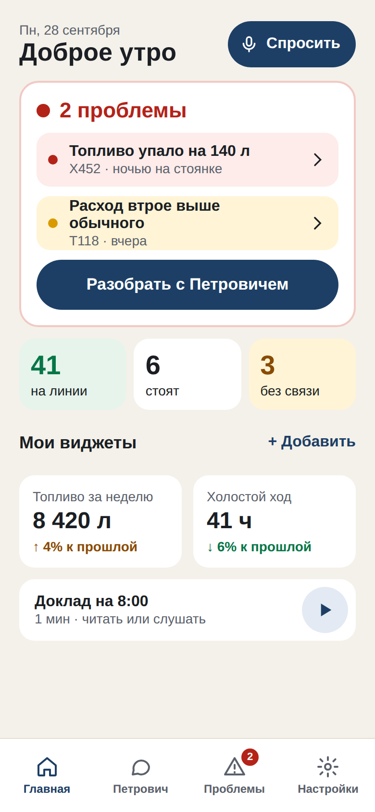
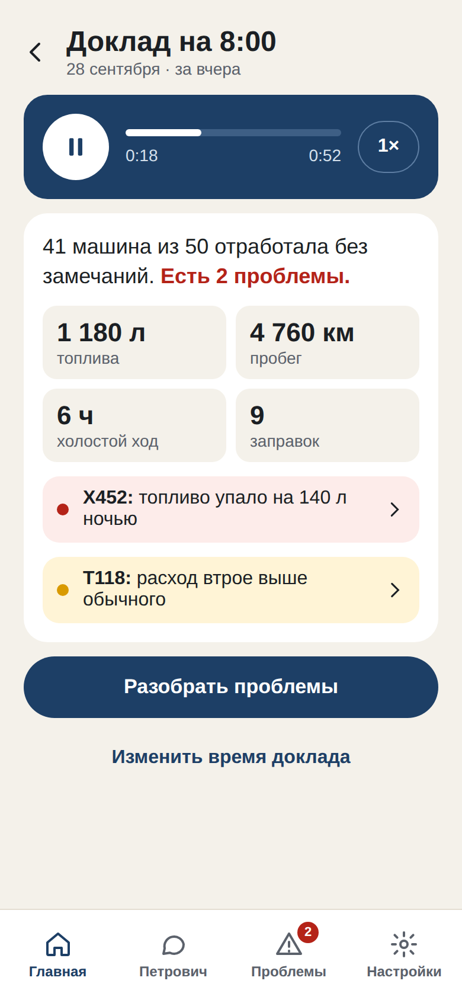
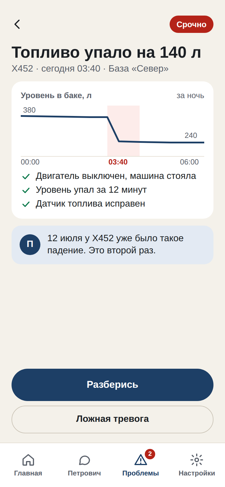
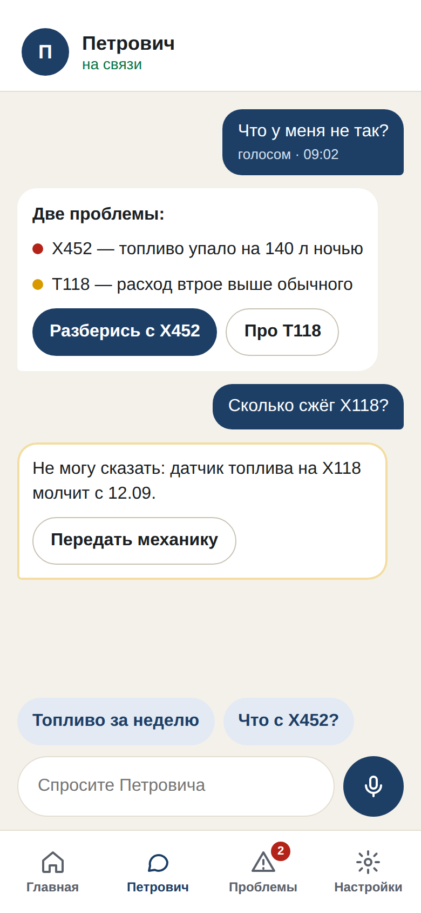
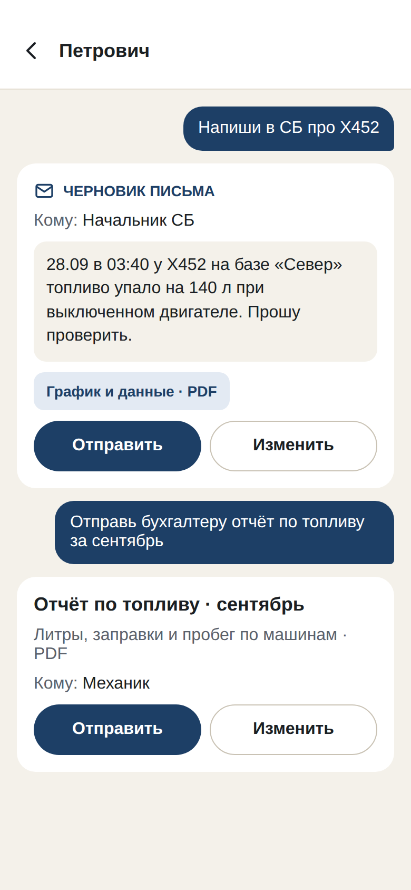
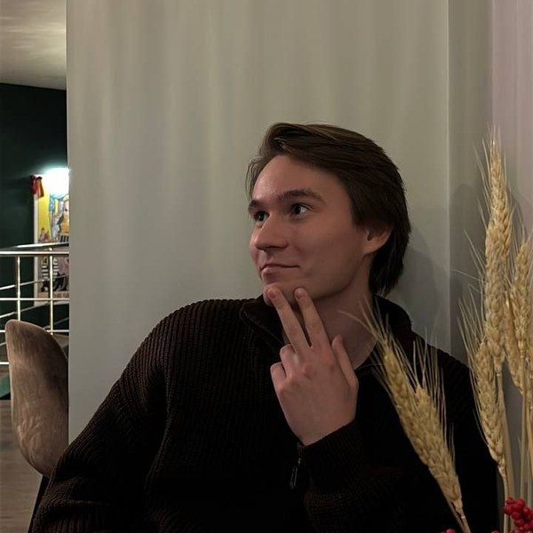

ПЕТРОВИЧ
«Петрович» — мобильное приложение
для владельца автопарка
Простое и понятное, с чат-ботом, который помогает разобраться
Итоги 1 спринта
Заказчик — «Техноком» · октябрь 2026
Итоги 1 спринта
Проблема, клиент, цель, метрики
бизнес-требования к MVP
Сделано
Исследования и сравнение приложений
desk research, Wialon, AutoGRAPH.Mobile
Сделано
Экраны: описание и 9 макетов
кликабельный прототип, 4 вкладки
Сделано
Android-прототип: 7 экранов
реальный API АвтоГРАФ + демо-режим
Сделано
Чат-бот: сквозной чат через сервер
шаг 1 из 7 · ветка fleet/step-1
Сделано
Чат-бот отвечает по данным парка
шаги 2–4: данные, проблемы, решения · ветки fleet
Сделано
Проверка на реальной LLM и выбор модели
в автотестах модель подменена
Спринт 2
6 / 7
задач сделано
Спринт 2
• Влить ветки fleet в main
• Фоновая проверка на сервере
• Письма в СБ после «Да»
• Тест на макете, 5 участников
• Выбор LLM на 20–30 вопросах
github.com/ErmakovDenis/petrovich: main и ветки fleet/step-1…4 (07–08.10.2026), бизнес-требования, описание экранов
Боль клиента
КТО КЛИЕНТ
Владелец парка
на 10–50 машин
Подключён к АвтоГРАФ · смотрит всё с телефона · в отчётах разбираться не хочет
Его вопросы:
«Сколько потратили?»
«Сколько заработали?»
«Что у меня не так?»
Что болит
Отчёты сложные
Литры и графики, из которых не следует, что делать. «Данные остаются просто цифрами»
Аналитик — дорого
При 10–50 машинах держать человека для разбора отчётов невыгодно
Мобильные приложения — для диспетчера
Карта, треки, отчёты; ответа «что не так» нет
Узнаёт поздно
О сливах, перерасходе и простоях — через несколько дней, когда деньги уже потеряны
Бизнес-требования к MVP (28.09.2026); Analiz/reserch.md; анализ App Store
Ценность: «Петрович» следит за парком и помогает
Цель MVP: владелец за 10 секунд понимает, всё ли в порядке, какая проблема и что делать — и может сразу начать разбираться
Как сейчас
Как с «Петровичем»
Узнаёт о сливе случайно, через несколько дней
Получает сообщение в течение 15 минут
Видит литры и графики, которые не понимает
Видит вывод одной фразой
Звонит в «Техноком» и ждёт аналитика
Спрашивает Петровича и сразу получает ответ
Пересказывает ситуацию СБ по телефону
Отправляет доказательства в СБ одной кнопкой
Бизнес-требования к MVP, раздел 1
Чат-бот «Петрович»
Диалог
Что у меня не так?
П
Главное — вероятный слив на Х452 ночью: ушло 140 л. Ещё две машины с расходом выше обычного. Разобраться с Х452?
Разобраться
Позже
Если данных нет: «Сказать не могу — датчик топлива на Х118 не отвечает с 12.09. Передать механику?»
Короткие ответы
«Что у меня не так?» → топ-3 проблемы, ≤ 3 предложений
Утренняя сводка
в 8:00, не длиннее 5 строк; срочное — не больше 3 в день
Разбор вместе
«Разберись» → что случилось, доказательства, варианты
Звонки и письма
в СБ и «Техноком» — только после «Да» владельца
Память
помнит прошлые случаи по каждой машине
Свои виджеты
«Добавь на главную расход по грузовым» — одной фразой
Как говорит Петрович
Так не надо:
«Зафиксировано 47 событий типа “слив” за период 17.09–23.09»
Так надо:
«Главное — сливы на Северной базе: 9 случаев. Разобраться?» Вывод → что делать, на «вы», без терминов, никого не обвиняет
Бизнес-требования к MVP, разделы 3–5
Кабинетные исследования: коротко
Что узнали
Что это значит для приложения
«Данные есть — толку нет»
Владельцы не пользуются отчётами; рынок платит аутсорс-аналитикам за разбор
нужен ответ, а не отчёт
В РФ нет ассистента для владельца
Motive, Samsara, Geotab объясняют данные словами — но в России не работают
ниша свободна
Ложные тревоги убивают доверие
Уведомления о «сливах» так часто ошибаются, что их отключают
≤ 3 срочных в день
Данные неидеальны
Пропуски связи, молчащие датчики топлива (на реальном файле — 72 % пропусков)
честное «нет данных»
Персональные данные (152-ФЗ)
Геолокация и ФИО водителя; передача за рубеж — штраф до 300 тыс. ₽
ФИО — не в AI-модель
Analiz/reserch.md, Analiz/conkyrentnyy-analyz.md, Problem Space.md
Сравнение мобильных приложений
Функция / Приложение | Wialon | AutoGRAPH Mobile | «Петрович» |
|---|---|---|---|
Список машин, папки по подразделениям | + | + | + |
Карта, трек, проигрывание маршрута | + | + | в карточке машины |
Поездки, стоянки, заправки и сливы | + | + | + |
Отчёты по поездкам и сливам | + | − | доклад |
Команды на объект (сообщения, маршруты) | + | − | − |
Вывод простым языком: «что не так» | − | − | + |
Чат-бот, вопросы голосом | − | − | + |
Утренняя сводка, срочное — не больше 3 в день | − | − | + |
Письмо / звонок в СБ по событию | − | − | + |
Вывод: аналоги — инструмент диспетчера (карта, треки, отчёты). Мы делаем приложение для владельца: ответ «что не так» и чат-бот.
Wialon · Gurtam
4,7 ★
2 700 оценок · обновлено недавно (2.22.27)
«В России не работает, деньги на ветер!» · «Перестало работать!!!»
AutoGRAPH.Mobile · Техноком
2,9 ★
105 оценок · последнее обновление 23.01.2024
«С мобильным интернетом вообще не ладит, только вайфай» · карта «приближает в случайную точку»
App Store: apps.apple.com/ru/app/wialon/id960699792, apps.apple.com/ru/app/autograph-mobile/id628312992 (данные на 07.10.2026)
Гипотезы
Продуктовые
П1
Владелец понимает статус парка за ≤ 10 с на главном экране
Проверка: тест на макете, 5 человек
П2
Чтобы узнать «что не так», владелец выберет чат, а не отчёт
Проверка: задание на тесте: что выберут
П3
Ответ в ≤ 3 предложениях понятнее графиков и таблиц
Проверка: опрос после теста
П4
Спросить голосом удобнее, чем набирать текст
Проверка: наблюдение на тесте
П5
Письмо и звонок в СБ из приложения нужны владельцу
Проверка: интервью с заказчиком
Технические
Т1
LLM с вызовом инструментов отвечает без выдуманных цифр
Проверка: 20–30 тестовых вопросов
Т2
Ответ через сервер приходит за ≤ 5 с
Проверка: замер на стенде
Т3
Данных АвтоГРАФ хватает для сводки и карточки события
Проверка: прототип на 7 машинах
Т4
Без ФИО в промпте можно использовать облачную LLM
Проверка: проверка запросов к модели
Т5
Простых правил хватает, чтобы Петровичу было о чём сообщить
Проверка: прогон на реальных данных
Бизнес-требования к MVP, ml/docs/assistant-server-plan.md · все гипотезы открыты
Метрики, которые проверим сами
Метрика | Цель | Как проверим сами |
|---|---|---|
Понять, есть ли проблема, на главном экране | ≤ 10 с у 4 из 5 | Юзабилити-тест на макете, 5 участников |
Ответ чат-бота на простой вопрос | ≤ 5 с | Замер на стенде, 20 запросов |
Выдуманные цифры в ответах | 0 | 20–30 тестовых вопросов, проверка вручную |
Короткие ответы (≤ 3 предложений) | ≥ 90 % | Тот же набор вопросов |
Сценарии MVP работают от начала до конца | 8 из 8 | Чек-лист сценариев на демо |
Главный экран открывается | ≤ 2 с | Замер на эмуляторе |
Автотесты | 100 % проходят | pytest и gradle test; сейчас 187 + 46 тестов |
После пилота с заказчиком: доля подтвердившихся сигналов ≥ 70 % и пользуются через 4 недели ≥ 60 % владельцев
Цели из бизнес-требований к MVP (10 с, 5 с, 2 с, ≤ 3 предложений), адаптированы под студенческий проект
Android: что сделали
7 экранов
1
Первый запуск: вход в АвтоГРАФ или демо
2
Сводка: доклад, «Слушать» (TTS), виджеты
3
Уведомления: лента по дням, фильтры
4
Карточка аномалии: график ±3 ч, решение
5
Чат «Петрович» с контекстом аномалии
6
Таблицы и графики: 4 раздела, 6 ч – 7 дней
7
Настройки и «Что присылать»
~6 500
строк Kotlin
46
модульных тестов
7
экранов
Под капотом
• Реальный API АвтоГРАФ (7 машин) + демо-режим на 10 машинах
• Потоковый разбор: только нужные параметры, части по 6 ч, gzip ~8×
• Агрегация 1 / 2 / 5 / 15 мин, дубли датчиков скрываются
• WorkManager каждые 15 мин, push только «предупреждение» и «критично»
• Решения «Подтвердить / Ложная» с причиной; через сервер видно, кто и когда решил
• Переключатели «через стенд»: чат, данные, проблемы, решения (ветки fleet)
petrovich/README.md, app/src; строки и тесты посчитаны по ветке fleet/step-4 (в main — ~5 300 строк, 8 тестов)
Чат-бот: Петрович отвечает по данным парка
Сделано — шаги 1–4 из 7 (ветки fleet/step-1…4, 07–08.10)
1. Сквозной чат
приложение → fleet_service → OpenRouter; числа только из данных
2. Данные парка
сервер сам грузит АвтоГРАФ; list_vehicles, get_vehicle_summary
3. Поиск проблем
правила перенесены один в один (эталонные тесты); check_vehicle
4. Решения владельца
SQLite, кто и когда решил; list_anomalies, get_anomaly
В приложении
переключатели «через стенд», чат из карточки события
5
инструментов у Петровича
187
тестов сервера (отчёт: зелёные)
smoke
проверка всей цепочки
Спринт 2
• Фоновая проверка на сервере (шаг 5)
• Письма в СБ только после «Да» (шаг 6)
• Убрать старый путь на телефоне (шаг 7)
• Влить ветки в main
Выбор LLM
Сейчас: OpenRouter, модель задаётся настройкой, сбор данных провайдером запрещён
Ограничение: в тестах модель подменена — на реальной LLM качество ещё не мерили
Дальше: 2–3 модели на 20–30 вопросах: tool calling, русский, скорость, цена, 152-ФЗ
github.com/ErmakovDenis/petrovich, ветки fleet/step-1…4: ml/fleet_service (README, prompts/system.md), ml/fleet-step-4-deviations.md
Обновлённые экраны: 9 макетов, 4 вкладки

Главная
проблемы, статус парка, виджеты

Доклад в 8:00
читать или слушать

Карточка события
график, «Разберись» / «Ложная»

Петрович
голос, коротко, «нет данных»

Письмо в СБ
черновик, отправка по кнопке
Что изменилось: 4 вкладки вместо 5 · чат — отдельная вкладка и кнопка «Спросить» · звонок и письмо только после подтверждения · ≤ 3 срочных в день и тихие часы
Макеты «Петрович — мобильное приложение» (Claude Design): 9 экранов + кликабельный прототип; данные на макетах условные
Архитектура
Android-приложение
• 7 экранов (Compose)
• Уведомления
• Кэш ленты без сети
• Переключатели: старый путь или сервер
HTTPS
fleet_service (FastAPI)
Агент: LLM + 5 инструментов
Данные АвтоГРАФ + кэш
Правила поиска проблем
Хранилище решений (SQLite)
Фоновая проверка
Письма в СБ
API АвтоГРАФ
данные парка
OpenRouter
LLM
SMTP
письма в СБ (план)
сделано
план (шаги 5–7)
Почему сервер: ключи LLM и почты нельзя хранить в приложении · цифры в чате и на экранах считает один код · доклады по расписанию невозможны, пока данные живут на телефоне.
ml/docs/assistant-server-plan.md, ветки fleet/step-1…4; сделанное ещё не влито в main
Стек и почему так
Слой | Выбор | Почему |
|---|---|---|
Клиент | Kotlin, Jetpack Compose (Material 3) | Основная аудитория на Android; нативный UI |
Фон | WorkManager: каждые 15 мин, окно 3 ч | Переживает перезапуск, экономит батарею |
Сеть | Retrofit + kotlinx.serialization, потоковый JsonReader | 17 МБ JSON в сутки на машину без падений по памяти |
Сервер | Python, FastAPI, SQLite + SQLAlchemy, Alembic, Docker | Чат, данные, проблемы, решения в одном месте; итоги сверены с приложением |
LLM-ассистент | OpenRouter, tool calling; модель — настройкой | Числа считают tools, модель только объясняет |
Веб-MVP и чат-бот | PostgreSQL, REST (Swagger), Chart.js, 2ГИС, Telegram | Кабинет аналитика и утренний доклад в Telegram |
Интеграция | JSON API АвтоГРАФ: 5 методов | Источник данных заказчика |
Задачи на 2 спринт
Цель спринта: Петрович отвечает владельцу по реальным данным, и мы проверяем это на людях
Продукт и аналитика
1
Юзабилити-тест на макете: 5 участников (П1–П3)
2
Интервью с заказчиком: письма и звонок в СБ (П5)
3
Решить: рубли или литры
4
Набор 20–30 тестовых вопросов для чат-бота
Сервер и чат-бот
1
Влить ветки fleet/step-1…4 в main
2
Фоновая проверка на сервере (шаг 5) — нужно решение по доступу к АвтоГРАФ
3
Письма в СБ только после «Да» (шаг 6)
4
Выбор LLM на тестовых вопросах + обезличивание (152-ФЗ)
Приложение
1
Главная и 4 вкладки по новым макетам
2
«Что у меня не так?» и доклад в 8:00
3
Голосовой ввод в чате
4
Звонок и письмо с экраном подтверждения
ml/docs/assistant-server-plan.md (шаги 5–7), гипотезы и метрики этой презентации, макеты экранов
Команда

Устинов Алексей
Фулстек
Ермаков Денис
Фулстек
Лысенко Кристина
Фронтенд
Резов Дмитрий
ML
Мансурова Алина
Аналитик